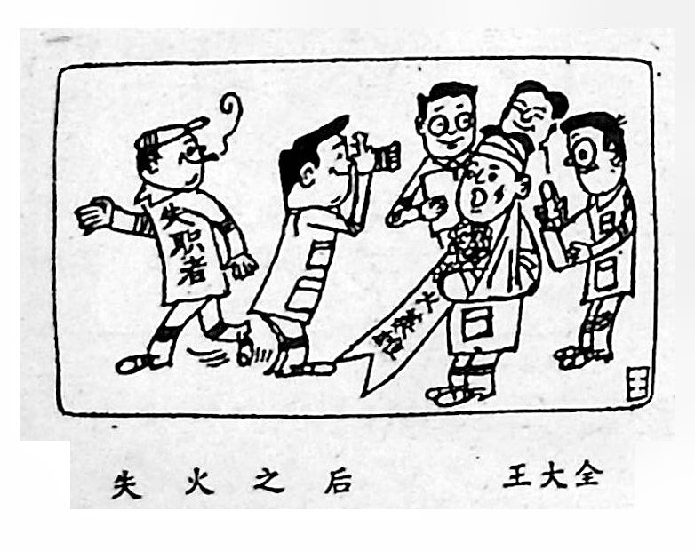

王大全 《人事》1987年第7期（总第22期），第44页
失火之后
After the Fire
- Text in the drawing
- 失职者 / 救火英雄
The one derelict in duty / Fire-fighting hero - Description
- While the man labeled “derelict in duty” strolls away, smoking and smiling, a photographer snaps a bandaged colleague in a hero's sash and rosette, surrounded by beaming onlookers.
- Note
- The cartoon contrasts praise for the people who put out a fire with indifference to the person who caused it.
- Artist
- Wang Daquan 王大全
- Published in
- 《人事》1987年第7期（总第22期）, p. 44
- Themes
- Passing the buck · Formalism

Cite
Wang Daquan, “失火之后” [After the Fire], Renshi (Personnel) 《人事》, 1987, no. 7, p. 44.